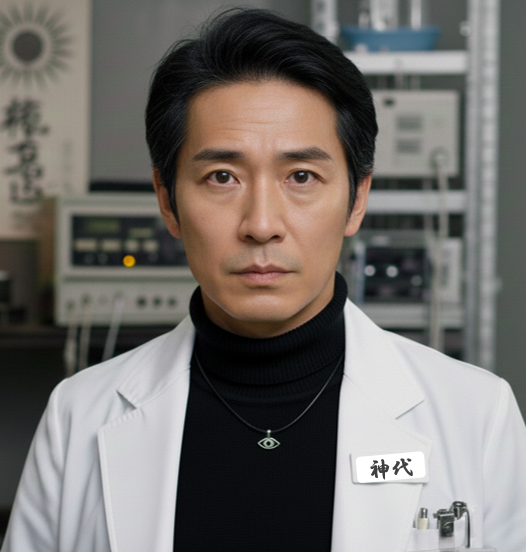

院長 百目島 ミキ（どめしま みき）
金枝聖域第八病院のホームページをご覧いただき、誠にありがとうございます。 当院は最先端の精神医学と睡眠科学を融合させ、現代社会が抱える複雑な心身の課題に応えるべく、独自のケア体制を構築してまいりました。
私たちが最も大切にしているのは、目に見える症状の改善だけではなく、患者様の内側にある「意識の安らぎ」です。 不和睡眠総合技術センターとの密接な連携により提供される次世代の脳機能アプローチは、単なる治療を超え、皆様のウェルビーイングの新たな地平を拓くものであると自負しております。
「永遠の眠り」と表現されるような、深く、淀みのない休息こそが、人間の生命力を最大化する鍵となります。 当院スタッフ一同、皆様の意識の登攀を全力でサポートし、安心して未来を託していただける病院づくりに努めてまいります。
どうぞよろしくお願い申し上げます。